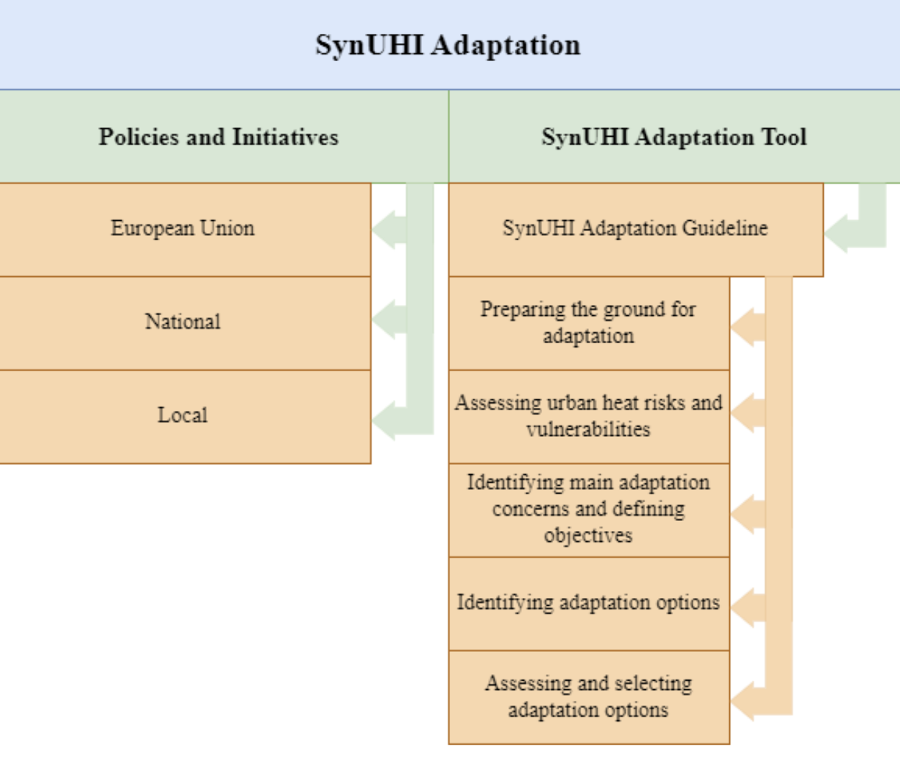
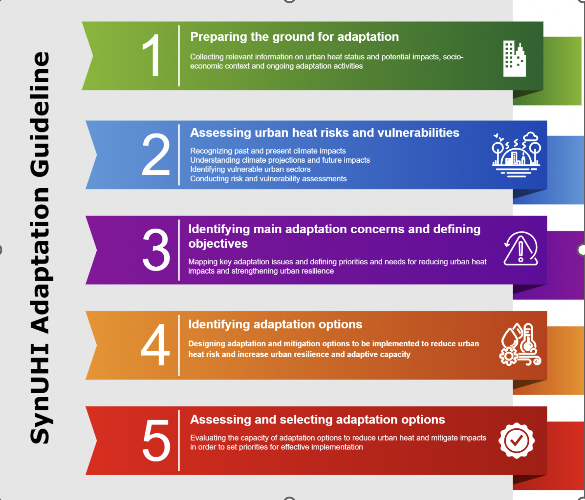

Policies and Initiatives
European level
The new EU Strategy for Adaptation to Climate Change (2021)
The European Commission adopted the Communication ‘Forging a climate-resilient Europe – the new EU Strategy on Adaptation to Climate Change’ on 24 February 2021 as climate change is making its effects felt in Europe and around the world through an increase in the frequency of extreme weather and climate events and the warmest decade on record. It has also been drawn up against the backdrop of the COVD-19 pandemic, which has triggered crises in the EU and beyond.
The main aim of the strategy is to create a resilient Union to prevent maladaptation to the effects of climate change and develop resilience to the unexpected, a Union that will become climate neutral by 2050, protecting the well-being and health of its citizens.
The strategy is based on three operational axes:
Smarter adaptation
More systemic adaptation
Faster adaptation.
Link: https://climate.ec.europa.eu/eu-action/adaptation-climate-change/eu-adaptation-strategy_en
The European Green Deal
It was adopted by the European Commission on 11 December 2019 and is Europe’s instrument to address complex environmental and climate challenges through a growth strategy focused on a fair and prosperous society with a modern, resource-efficient and competitive economy with no net greenhouse gas emissions by 2050 and where economic growth is decoupled from resource use. The European Green Deal is also the European Commission’s strategy for implementing the United Nations 2030 Agenda and the Sustainable Development Goals, putting sustainable development at the heart of European policies.
Link: https://commission.europa.eu/strategy-and-policy/priorities-2019-2024/european-green-deal_en
Eurocities Strategic Framework for 2020-2030
Eurocities is a leading network of major European cities working together to ensure a good quality of life for all. Eurocities comprises over 200 cities in 38 countries, representing 130 million people. Eurocities’ strategic framework for 2020-2030 Eurocities is a leading network of major European cities working together to ensure a good quality of life for all. Eurocities comprises over 200 cities in 38 countries, representing 130 million people.
Romanian cities in Eurocities network: Cluj-Napoca, Timisoara, Constanta.
National level
National strategy on adaptation to climate change for the period 2022-2030
National Action Plan for Adaptation to Climate Change
National Integrated Urban Development Strategy for Resilient, Green, Inclusive and Competitive Cities 2022-2035 - Romania’s Urban Policy
This is the first strategic document at national level dedicated to urban development, being a concrete instrument for the transposition at national level of the objectives and principles of the framework documents at European and global level. It aims to improve urban resilience through the development of local policies and strategies leading to greener, more sustainable, more competitive and more social cities.
National Strategy for the Sustainable Development of Romania 2030
Adopted by the Romanian Government in November 2018, National Strategy for the Sustainable Development - 2030 sets the national framework for supporting the 2030 Agenda and the implementation of the set of 17 SDGs. The strategy supports Romania’s development on three pillars economic, social and environmental pillars. The strategy is citizen-oriented and focuses on innovation, optimism, resilience and trust that the state serves the needs of every citizen in a fair, efficient and clean environment in a balanced and integrated way.
Link: https://dezvoltaredurabila.gov.ro/strategia-nationala-pentru-dezvoltarea-durabila-a-romaniei-2030-i
National Integrated Energy and Climate Change Plan 2021-2030
This plan aims to set out the basis for policies and interventions designed to ensure a socially just transition for Romania. It is also strongly focused on sustainable and green development targets, especially in urban areas.
Link: https://energy.ec.europa.eu/system/files/2020-04/ro_final_necp_main_ro_0.pdf
Local level
Integrated Urban Development Strategy of Bucharest 2021 – 2030
This is the main local strategic document that sets out the key development directions for the city, as well as short, medium and long-term priority projects and programmes. It investigates the problems and needs of the city and proposes the strategic pillars of sustainable and harmonised development of the capital city.
SynUHI Adaptation Tool
Support Tool for Urban Adaptation to Heat Waves in Romania aims to assist urban planners, policymakers, and stakeholders to make informed decisions on developing, implementing, and monitoring adaptation plans. The SynUHI Adaptation Tool provides relevant information for setting up the local adaptation process in urban areas in Romania, gathering climate data and local risk information for 41 cities.
It provides guidelines and specific options to better cope with the UHI-HW stress under current and future climate conditions. It is based on Urban Adaptation Support Tool steps (https://climate-adapt.eea.europa.eu/en/knowledge/tools/urban-ast/step-0-0) and uses dynamic analysis and simulations for the local contexts of the biggest cities in Romania.
In connection with the data visualisation feature, the adaptation tool provides the basis for an effective adaptation process, providing relevant information on UHI&HW risks and vulnerabilities, adaptation options and best practices. The tool also supports the assessment and monitoring of adaptation options in urban areas in Romania.
The tool is closely linked and aligned with the European Climate-Adapt Platform (https://climate-adapt.eea.europa.eu) and National Adaptation Platform in Romania (https://roadapt.ro).
SynUHI Adaptation Guideline

Preparing the ground for adaptation
Adaptation process development should be based on evidence and robust information. This includes identifying existing work on actual and potential future climate change-related effects, ongoing adaptation activities and good practice examples within or outside the city.
The main policy documents addressing adaptation to climate risks are compiled at European, national and local level and serve as a necessary policy context.
Urban adaptation is a multi-sectoral process, thus multiple types of data are needed for a comprehensive approach.
| Types of information | Information sources |
|---|---|
Weather forecasts Observed trends Climate projections |
National Meteorological Administration (Meteo-RO) - http://rcc.meteoromania.ro National Adaptation Platform (RO-ADAPT) - https://roadapt.ro Copernicus and Climate Change Service - https://climate.copernicus.eu |
| Environmental assessments and natural hazards | National Agency for Environmental Protection - https://atlas.anpm.ro/atlas |
| Current vulnerability and adaptive capacity assessments | Population, demographic and socio-economic data from Eurostat (https://ec.europa.eu/eurostat) and National Institute of Statistics (https://insse.ro/cms/en) Health records from National Institute for Public Health (https://insp.gov.ro) Maps of infrastructure, green space, public health facilities - General Urban Plan |
| Socio-economic future projections | Population projections Scenarios of political developments, consumption patterns, infrastructure development, market transformation, etc. National Institute of Statistics (https://insse.ro/cms/en) |
| Other relevant strategies, policies and plans | Strategies for sustainable/economic development: -National Strategy for the Sustainable Development of Romania 2030 - Integrated Urban Development Strategy of Bucharest 2021 – 2030 (https://estibucuresti.pmb.ro/sidu) - National Integrated Urban Development Strategy for Resilient, Green, Inclusive and Competitive Cities 2022-2035 - Romania’s Urban Policy |
Assessing urban heat risks and vulnerabilities
Recognizing past and present climate impacts
SynUHI conducted:
The study of the relationships between heat waves and the urban heat island.
Selection of relevant indices and indicators for the analysis of heat waves and their relationship with the urban heat island.
Analysis of wave variability of heat in the current climate.
Past and present urban climate was analyzed for the available period, with a focus on the hazard driven by heat waves in the context of the urban heat island.
Understanding climate projections and future impacts
Heat-related hazards expose cities to major risks and climate change projections indicate a substantial increase in health impacts such as mortality. Exposure to high temperatures may be amplified by the combined effect of global warming and urban heat islands that threaten the sustainable development of cities. National-scale assessment of heat hazard and risk indicates high values in cities in the south, south-east and south-west of Romania.
Warming in urban areas is expected to persist and intensify in both climate scenarios (RCP 4.5 and RCP 8.5) and socioeconomic scenarios (SSPs) from 2021 to 2050, indicating an increase in night-time heat stress. This increase is also expected to be more intense in the southern part of the country. Heat waves are a risk factor for all the analysed cities, and the level of that risk depends on local vulnerability.
The SynUHI tool provides a more detailed analysis at the level of the main cities in Romania, complementing national and European tools:
RO-ADAPT platform, where local air temperature indicators are provided for the 2100 time horizon.
Urban Adaptation Map Viewer, the Climate-ADAPT tool, provides climate projections and socio-economic information for urban adaptation.
European Climate Data Explorer, which provides interactive access to a growing selection of climate indices for key sectors at EU level for the 2100 time horizon.
Identifying vulnerable urban sectors
| Sector | Impacts |
| Public Health | - Increased heat-related illnesses and deaths - Exacerbation of respiratory conditions due to poor air quality - Impact on mental health due to prolonged exposure to heat |
| Energy | - Higher demand for air conditioning leading to increased energy consumption - Strain on the power grid during peak cooling periods |
| Infrastructure | - Deterioration of roads and buildings due to higher temperatures - Increased maintenance costs for infrastructure repairs |
| Water Resources | - Increased water consumption for irrigation and cooling purposes - Stress on water sources due to higher demand |
| Biodiversity | - Disruption of ecosystems and habitats - Changes in plant and animal species distribution |
| Industry | - Reduced productivity in outdoor industries during heatwaves - Increased healthcare costs due to heat-related illnesses |
| Buildings | - Accelerated degradation of building materials due to prolonged exposure to high temperatures - Increased wear and tear on roofs, walls, and other surfaces. - Repairing heat-related damage to roofs, walls, and other building components. |
| Social Equity | - Vulnerable populations disproportionately affected by heat stress - Disparities in access to cooling resources and green spaces |
Conducting risk and vulnerability assessments
Urban Heat Island and Heatwaves risks assessment in a city should consider several aspects: the climate threat (projected climatic conditions); context of the geographic location (e.g. coastal area, mountain region, etc.); and affected sectors and systems (e.g. human health, infrastructure, transport, energy, water, etc.) including the impacts on the most vulnerable groups (e.g. the elderly).
Risk and vulnerability assessment questions:
What are the evolution and trends of HW and UHI indicators based on a range of different climate scenarios?
What are the HW and UHI hazards that occur in the city?
What are the most vulnerable areas, populations and economic activities in the city and what are the expected impacts on these?
What is the confidence level for such impacts in the local context?
Identifying main adaptation concerns and defining objectives
Based on the HW and UHI risk and hazard assessments and local vulnerabilities, a strategic direction should be developed. These preliminary analyses help to identify key adaptation issues and define priorities and needs for strengthening urban resilience. Once the main adaptation issues are known and prioritised, specific and realistic adaptation objectives for the city can be defined.
Adaptation objectives should address:
Developing integrative strategies for adapting HW and UHI to adequately address the city’s needs and improve resilience
Developing heat action plans and early warning systems for better response to heat waves, ensuring prompt communication and access to cooling centres.
Improving urban planning to incorporate heat mitigation strategies such as zoning regulations that promote green infrastructure and sustainable building practices
Raising public awareness on the risks of extreme heat and ways of protection
Reducing social inequalities and ensuring that adaptation strategies consider the needs of the most vulnerable populations.
Identifying adaptation options
| Type of adaptation measures | Adaptation measures |
| Urban Planning |
|
| Buildings |
|
| Vegetation and Urban Greening |
|
Assessing and selecting adaptation options
Adaptation options must be assessed to determine their suitability to the local context and their effectiveness in reducing the air temperature in urban areas.
Comprehensive guidelines for urban adaptation to climate change are available at the EU level (Guide to Climate Change Adaptation in Cities, Planning for Adaptation to Climate Change - Guidelines for Municipalities), providing relevant information on adaptation and implementation of adaptation options, while the SynUHI tool provides a quantitative assessment of the adaptation options effects. Using climate modelling, it explores the interaction between the urban heat island and adaptation strategies, providing the evolution of air temperature in a site where a measure has been implemented.
This assessment of direct impacts on air temperature is a basis for a broad multi-criteria assessment that should be carried out to select the best options to be implemented. An effective adaptation measure could reduce the air temperature by 1 to 4 degrees Celsius. In addition, a more comprehensive analysis should consider financial and social impacts, success and limiting factors and linkages, and compatibility with other measures.